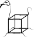

Drosophila transcription factor binding motifs built by integrating data from different available experimental sources, read more.
DMMPMM: motif collection
Drosophila transcription factor binding motifs built by careful usage of footprinting data, read more.
MACRO-APE: motif comparison
MAtrix CompaRisOn by Approximate P-value Estimation toolbox allows estimating motif P-values and comparing PWMs using natural Jaccard similarity measure, read more.
SeSiMCMC: motif discovery
Sequence Similarities by Marcov Chain Monte Carlo (SeSiMCMC): Yet Another Digging For DNA Motifs Gibbs Sampler, read more.
 APSampler: association analysis
APSampler is a tool that allows multi-locus and multi-level association analysis of genotypic and phenotypic data,
read more.AhoPro: motif overrepresentation
AhoPro was created to seach for overrepresentation of given motifs in DNA sequences and to search for motif cooccurrence, read more.
TandemSWAN: tandem repeats
TandemSWAN is the algorithm for searching for degenerate tandem repeats without insertions and deletions, read more.